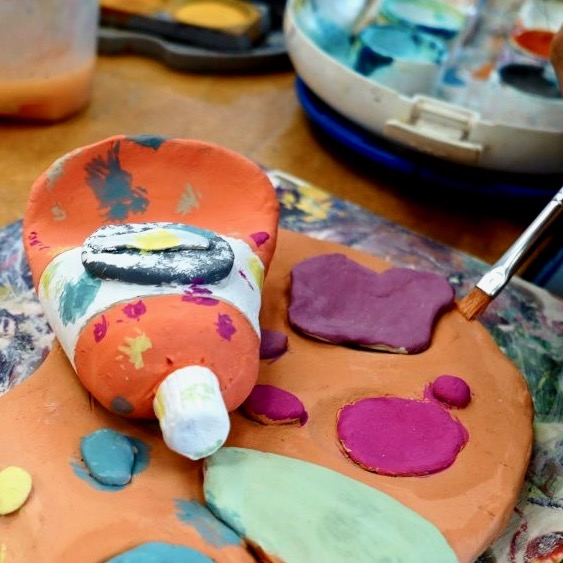
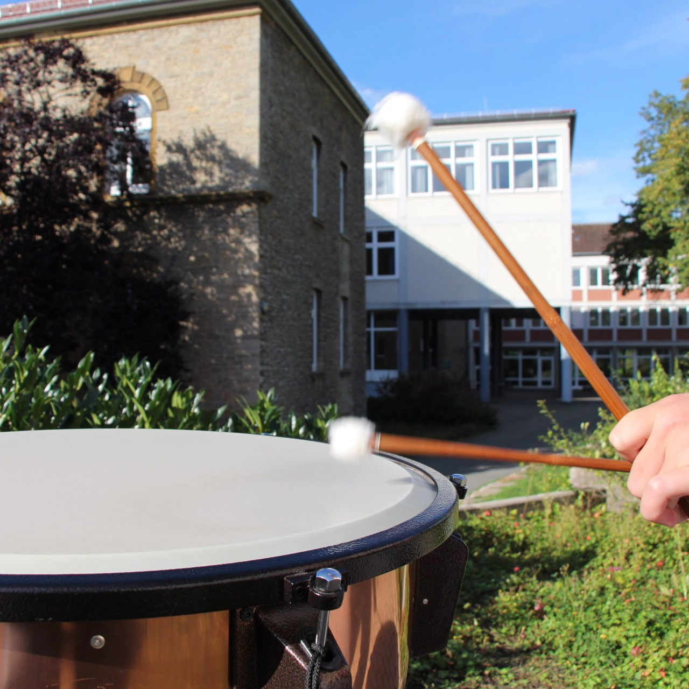
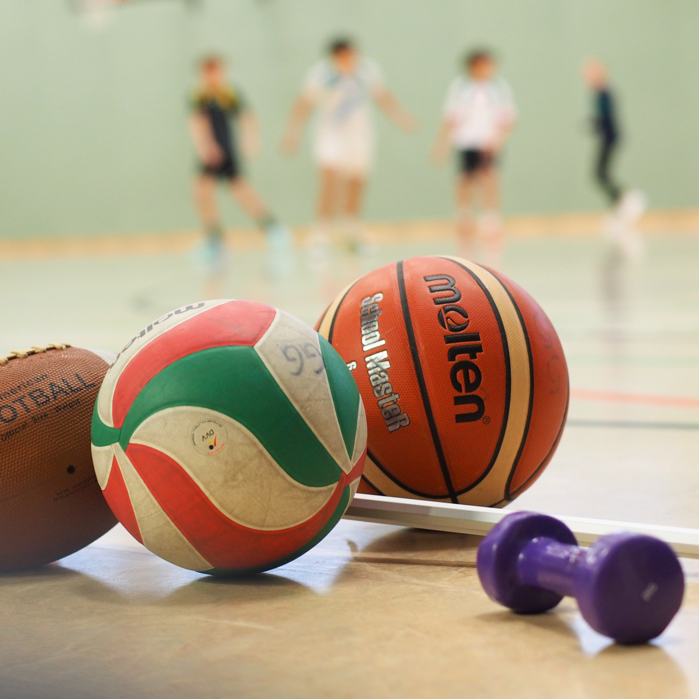
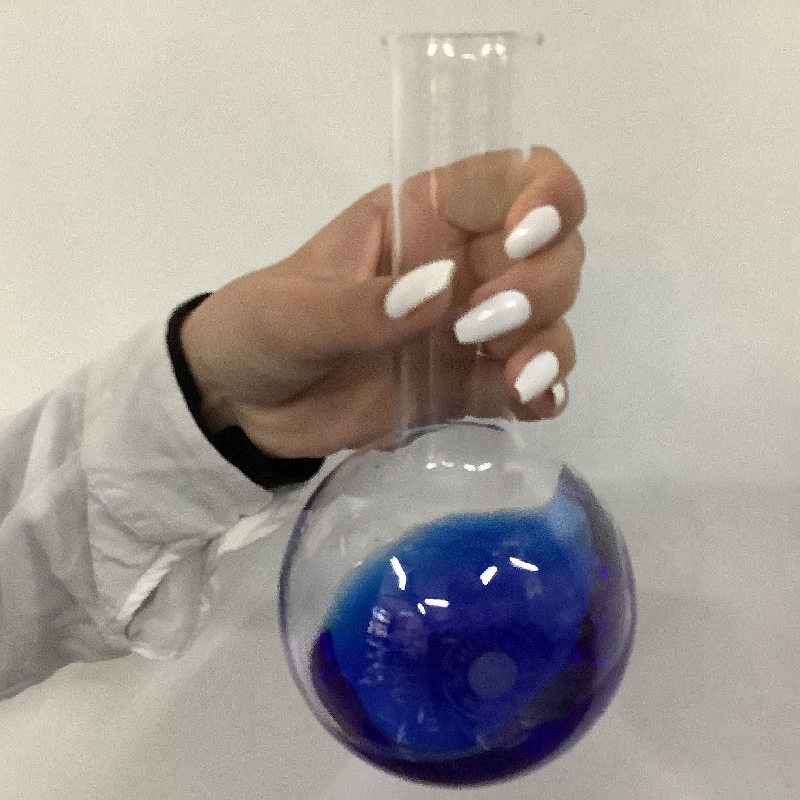
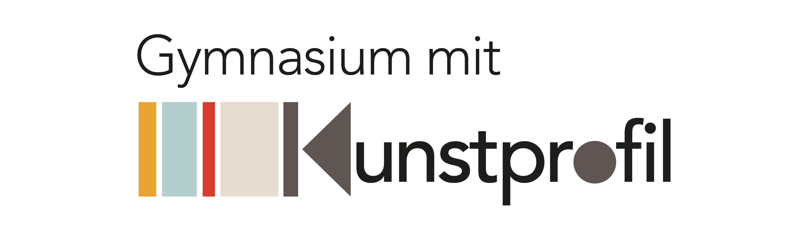

Herzlich willkommen!
Entdecke das Grabbe und scroll weiter durch die Seite, wähle im Menü das Gewünschte aus oder probiere die Suchfunktion weiter unten!
Informationen zur Anmeldung zur neuen Klasse 5 im Schuljahr 2026/27
Liebe Eltern und Erziehungsberechtigte,
wenn Sie Ihr Kind noch nachträglich bei uns anmelden wollen, schicken Sie die erforderlichen Unterlagen:
-
-
-
-
-
-
-
-
- gelber Anmeldeschein,
- Zeugnis 1. Halbjahr mit Übergangsempfehlung,
- Geburtsurkunde,
- Datenschutzerklärung,
- ausgefülltes Anmeldeformular
per E-Mail an das Sekretariat (sekretariat@grabbe.nrw.schule). Wir nehmen dann Kontakt zu Ihnen auf. Die notwendigen Dokumente zur Anmeldung finden Sie hier.
Alle weiteren Infos zur Erprobungsstufe (Konzept etc.) finden sich hier.
Liebe Freund:innen des Grabbe-Gymnasiums, die es sind und werden wollen. Mit neuem Schwung in innovativer Kraft entwickeln wir unsere Schule für Dich weiter:
Wir fördern Deine Talente und stärken Deine Persönlichkeit.
Wir wünschen uns glückliche Schüler:innen in einer guten Gemeinschaft - mit Deinen Freund:innen.
Wir gestalten Deine Zukunft mit Dir.
Dr. Claus Hilbing und Tanja Brentrup-Lappe, Eure Schulleitung
Deine Talente.
Deine Bühne.
Dein Grabbe.
Bringe deine Ideen ein und mach sie sichtbar!
Ich kann was - und es zählt!
Die Jahrgänge 5 und 6 bilden eine besondere pädagogische Einheit, die Erprobungsstufe. Während dieser Zeit, die für Schüler:innen mit dem Übergang von der Grundschule zum Gymnasium viele Veränderungen mit sich bringt, begleiten wir Ihre Kinder intensiv. Anknüpfend an die Lernerfahrungen in der Grundschule führen wir die Schüler:innen an die Unterrichtsmethoden und Lernangebote des Gymnasiums heran.
Das besondere Profil des Grabbe mit den Profilprojekten in Kunst, Musik, Sport oder NaWi bietet den Schüler:innen die Möglichkeit, frei wählbar in einem der vier Profilprojekte für ein Jahr in einer gemischten Gruppe neue Lernwege zu entdecken. Moderner, vom Leistungsdruck befreiter und die unterschiedlichen Talente und Neigungen der Schüler:innen fördernder Projektunterricht steht dabei im Mittelpunkt. Die zusätzlichen Arbeitsgemeinschaften der Profilfächer stehen den Schüler:innen aller Klassen offen.
Die Klassenbildung erfolgt dabei nach sozialen Kriterien und berücksichtigt dabei neben der Grundschulzugehörigkeit auch die Wunschpartner:innen.
Wir laden Sie vor den Sommerferien zu einem Begrüßungsnachmittag ein, an dem Ihre Kinder ihre neuen Mitschüler:innen sowie ihr Klassenleitungsteam und ihren Klassenraum kennenlernen. Die ersten Unterrichtstage zum Kennenlernen gestaltet das Klassenleitungsteam mit einem pädagogischen Programm und auch in der Klassenleitungsstunde liegt der Schwerpunkt auf dem sozialen Lernen. Eine einwöchige Klassenfahrt zu Beginn der sechsten Klasse festigt weiterhin die Klassengemeinschaft.
Wähle das Profilprojekt nach deinen Interessen!
Gestalte frei - ohne Leistungsdruck!
Wir gestalten Deine Zukunft mit Dir!
Du wirst zunehmend kreativer und selbstständiger!
Wir beteiligen Dich an immer mehr Entscheidungen!
Du kannst was - und es zählt!
Kunstprojekt

Das Fach Kunst ist durch selbstbestimmtes Handeln und anschauliches Denken geprägt, was Lernen besonders nachhaltig macht und zum ganzheitlichen Erleben und Verstehen der Wirklichkeit führt. Dies ist bedeutsam in Bezug auf die zunehmende Ästhetisierung und Virtualisierung der Lebenswelt. Durch die Stärkung der Ich-Identität ermöglicht das Fach Kunst den Kindern, sich in der Welt zu behaupten und diese als gestaltbar und veränderbar zu begreifen. Der Kunstunterricht am Grabbe-Gymnasium versteht sich so als bedeutsamer und hochwertiger Baustein im Aufbau zukunftsrelevanter Kompetenzen für alle Schüler und Schülerinnen.
Neben den für alle Gymnasien obligatorischen Wochenstunden im Fach Kunst wird in den Klassen 5 und 6 ein Projektkurs "Werkstatt Kunst - Unsere Welt mit den Augen von Künstlerinnen und Künstlern" zusätzlich verankert. Dies bietet weiteren Freiraum, in dem die Schülerinnen und Schüler ohne Notendruck projektbezogen arbeiten können. Dem Profilprojekt liegt ein ganzheitliches und erfahrungsbezogenes Konzept zugrunde, in dem in besonderer Weise der künstlerische Prozess im Mittelpunkt steht. Ein Anliegen des Kurses ist u.a. die Sensibilisierung und Schärfung der Wahrnehmung, die Auseinandersetzung mit der eigenen Lebenswelt und der Aufbau künstlerischen Ausdrucks.
Zum Kunst-Portal
Musikprojekt

Im Musikprofil entdecken Schülerinnen und Schüler ihre musikalischen Interessen, Kreativität und Begabungen – in Theorie und Praxis, individuell und im Miteinander. Der Musikunterricht bildet dabei das kontinuierliche Rückgrat ihrer musikalischen Bildung.
Ergänzend zum Musikunterricht wird im Musikprofil Instrumentalunterricht in Kooperation mit externen Instrumentallehrkräften angeboten. Im zweiten Halbjahr des Jahrgangs 5 wird die instrumentale Praxis im Profilorchester intensiviert und vertieft.
Im Musikprojekt arbeiten die Schülerinnen und Schüler praxisorientiert in unterschiedlichen Vorhaben:
• Instrument & Stimme (Jg. 5.1)
• Profilorchester (Jg. 5.2, wöchentlich)
• Klang & Szene (Jg. 6)
Darüber hinaus bieten die AG-Angebote vielfältige Möglichkeiten Musik aktiv zu leben. Die Ensembles arbeiten jahrgangsübergreifend und fördern Begabungen nachhaltig und individuell.
Besondere Förderangebote und die enge Zusammenarbeit mit außerschulischen Partnernrunden das Musikprofil ab.
Das Profilfach Musik ist Teil des Schulversuchs „NRW-Musikprofil-Schule“.
Zum Musik-Portal
Sportprojekt

Als eine der wenigen ausgewählten „Partnerschulen des Sports“ in NRW zeichnet sich das Grabbe-Gymnasium durch ein besonders sportfreundliches Klima aus und bietet allen jugendlichen Talenten die Chance, eine fundierte Schulausbildung mit einer optimalen Sportförderung zu verbinden. Diese Förderung erfolgt u.a. durch frei wählbare Sport-Projektkurse, vielfältige Sport-AGs in den Sportarten Kunstturnen, Fußball, Leichtathletik und Volleyball und die besondere Unterstützung von leistungsport-orientierten Schülerinnen und Schülern.
Regelmäßig nehmen Schulmannschaften des Grabbe-Gymnasiums erfolgreich an Schulwettkämpfen teil. Basierend auf einer engen Zusammenarbeit von Schule, Verein, Eltern und Schülerinnen und Schülern werden darüber hinaus individuelle Lösungen für Kaderathletinnen und -athleten gefunden, sodass sportliche Begabungen in besonderer Form gefördert werden.
Zum Sport-Portal
Nawi-Projekt

Im Profilprojekt Nawi entdecken die Schülerinnen und Schüler der Klassen 5 und 6 die spannende Welt der Naturwissenschaften. Mit Neugier und Forschergeist gehen sie Phänomenen aus Biologie, Chemie, Physik und Informatik auf den Grund – immer mit dem Ziel, durch eigenes Beobachten, Experimentieren und Nachdenken Zusammenhänge in der Natur und Technik zu verstehen.
Im Mittelpunkt steht das selbstständige und entdeckende Lernen. Die Kinder lernen, Fragen zu stellen, eigene Ideen zu entwickeln, Versuche zu planen und ihre Ergebnisse zu präsentieren. So erwerben sie nicht nur naturwissenschaftliches Wissen, sondern auch wichtige Fähigkeiten wie Teamarbeit, Genauigkeit und Ausdauer.
Die Themen orientieren sich an der Lebenswelt der Kinder und wechseln mit den Jahreszeiten. Ob beim Erkunden der Sinne, beim Beobachten von Pflanzen und Tieren, beim Experimentieren mit Wasser und Energie oder beim Untersuchen von Wetterphänomenen – überall steht das eigene Erleben und Ausprobieren im Vordergrund. Digitale Messgeräte und Sensoren helfen dabei, Daten zu erfassen und wissenschaftlich auszuwerten.
Ergänzt wird das Profilprojekt durch Wettbewerbe und Exkursionen, die Einblicke in die Anwendung naturwissenschaftlicher Erkenntnisse geben und die Freude am Forschen vertiefen. Besonders engagierte Schülerinnen und Schüler werden für ihre Leistungen ausgezeichnet und können ihr Wissen in weiteren schulischen MINT-Aktivitäten einbringen.
Dass die Naturwissenschaften an unserer Schule einen besonderen Stellenwert haben, zeigt die wiederholte Auszeichnung durch die Initiative „MINT Zukunft Schaffen!“. Als MINT-freundliche Schule legen wir großen Wert darauf, Begeisterung für Mathematik, Informatik, Naturwissenschaften und Technik zu wecken und zu fördern.
So bietet das Profilprojekt Nawi einen lebendigen Einstieg in die Welt des Forschens – voller Neugier, Kreativität und Freude am Entdecken.
Zum Nawi-Portal
Dein Start in der Oberstufe
Wir freuen uns über Ihr/euer Interesse an unserer Schule!
Nähere Informationen über unsere Oberstufe finden sich unter dem Button "Zum Oberstufen-Portal",
z. B. in der Broschüre, die unter der Rubrik "Laufbahnplanung" zur Verfügung steht.
Die Anmeldewoche für die Oberstufe findet vom 23. bis 27.02.2026 statt.
Anders als bei den fünften Klassen erfolgt die Terminvergabe nicht über das Online-Tool, sondern unter der Tel.-Nr. 05231 992617 oder per Mail an b.mannebach@grabbe.nrw.schule.
Gerne können Interessent:innen sich auch im Vorfeld der Anmeldewoche schon persönlich oder telefonisch beraten lassen oder einen oder zwei Tage bei uns hospitieren.
Die Anmeldeunterlagen stehen hier zum Download bereit:
o Anmeldeformular (Unterschrift von BEIDEN Erziehungsberechtigten erforderlich)
o Einwilligung Datenverarbeitung
o Antrag auf Busfahrkarte
Zur Anmeldung vorzulegen sind außerdem:
o eine Kopie der Geburtsurkunde,
o das letzte Zeugnis sowie
o ein Nachweis über die erfolgte Masernimpfung (Vorlage des Impfpasses reicht aus, keine Kopie erforderlich)
Hinweis: Voraussetzung für die Aufnahme in die Sekundarstufe II des Grabbe-Gymnasiums ist
das Vorliegen der Berechtigung zum Besuch der gymnasialen Oberstufe, die
- am Gymnasium durch die Versetzung am Ende der Jahrgangsstufe 10
- an anderen Schulformen durch den Erwerb des Mittleren Schulabschlusses mit Q-Vermerk
erworben wird. Das entsprechende Zeugnis muss vor Beginn der Einführungsphase nachgereicht werden.
Fächer und Arbeitsgemeinschaften
Viele Fächer warten auf dich!
Am Nachmittag hast du bei uns die freie Wahl!
Das Grabbe-Gymnasiums wird zum Lebensort Ihrer Kinder. Ihre Kinder können sich in vielen verschiedenen Fächern mit engagierten Kolleg:innen bilden. Sie haben nach Englisch die Möglichkeit, Französisch oder Latein und später Spanisch zu wählen. Alle Naturwissenschaften und Informatik werden einzeln und auch verbunden, wie in der Natur, angeboten. Die Gesellschaftswissenschaften runden das immer wichtigere Thema rund um Nachhaltigkeit, Demokratiebildung und geschichtliche Verantwortung und mehr ab. Ganz besonders betonen wir die Bildung im Bereich Kunst, Musik und Sport und Nawi. Dies findet sich in Projekten und AGs am Nachmittag wieder. Lernen Sie unser AG-Programm kennen! So runden wir den Schultag bis in den Nachmittag flexibel und verlässlich ab. Viel Spaß!
WER, WAS, WO?
Kommunikation miteinander macht den Grabbe-Spirit aus.
So finden Sie uns
Christian-Dietrich-Grabbe-Gymnasium
Küster-Meyer-Platz 2
32756 Detmold
sekretariat@grabbe.nrw.schule
Telefon: 05231-99260
Telefax: 05231-992616
oder digital: Instagram Linkedin facebook
Du bist in höchstens 30 min bei uns
- mit Bahn oder Bus
- mit dem Fahrrad:
- zu Fuß:
Ansprechpartner:innen
|
Schulleitung
Personal- und Organisationsentwicklung
Unterrichtsverteilung
|
Herr Dr. Hilbing
|
|
Ständige Vertretung der Schulleitung
Planung und Bewirtschaftung der Haushaltsmittel
Unterhaltung der Schulgebäude und Schulanlagen
|
Frau Brentrup-Lappe (komm.) |
Organisatorische Koordinationsaufgaben
|
Koordination der Erprobungsstufe (Klassen 5-6)
|
Herr Hecker
|
|
Koordination der Mittelstufe (Klassen 7-10)
|
Herr Dr. Chée
|
|
Koordination der gymnasialen Oberstufe
|
Frau Mannebach
|
|
Koordination der Verwaltung
|
Herr Schilling
|
|
Didaktische Koordination
|
Herr Dr. Hilbing
|
|
Steuergruppe für die Schulentwicklung: Herr Beckmann, Frau Bossmanns, Frau Knüppel, Herr Wessel mit Herrn Dr. Hilbing
|
Vernetzt in Detmold
Wir bieten Ihren Kindern nicht nur in der Schule lebensnahe Erfahrungen, sondern auch mit den Institutionen, Einrichtungen und Unternehmen, mit denen wir vertrauensvoll und verlässlich zusammenarbeiten, um den Grabbianer:innen viele verschiedene Perspektiven auf die Welt und das Leben zu ermöglichen:
Hochschule für Musik - Landestheater Detmold - Johanniter - Stadtbibliothek Detmold - Lippische Landesbibliothek - Landesarchiv NRW - Holocaust-Gedenkstätte Yad Vashem - McLean Highschool Washington - Wortmann KG - Weidmüller GmbH & Co KG – Peter-Gläsel-Schule Detmold

"εὕρηκα (gr.: Ich habe gefunden.)"
(Archimedes von Syrakus)
Noch nicht das Richtige gefunden? Benutze unten die Gesamtübersicht, den Index aller Suchworte von A bis Z oder die Google-Suche!
Die Google-Suche kann während der Umstellung der Homepage veraltete Links anzeigen. Bitte beachte das Datum der entsprechenden Angaben!
Das ausführliche Impressum mit Verantwortlichen und Datenschutz-Hinweisen findest du hinter diesem Link:
Impressum und Datenschutz